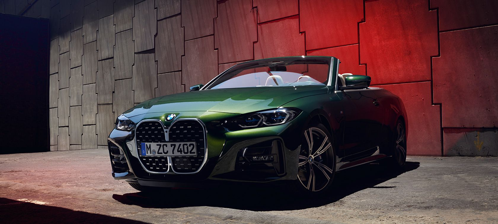
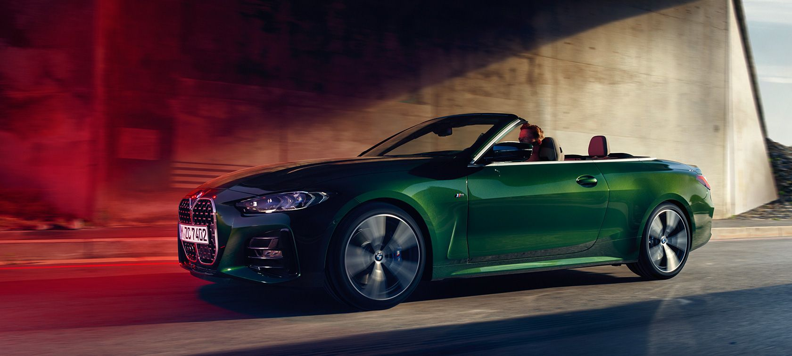
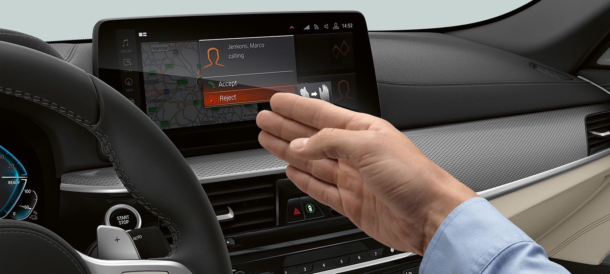
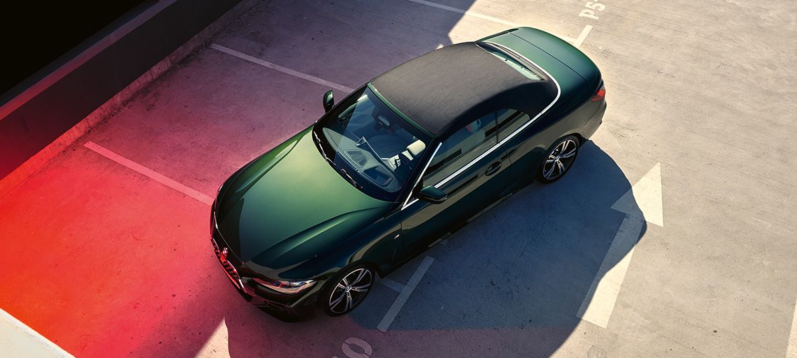

|  | ||||
| Motor ve Yakıt Tipi | Güç | 0-100KM | ||
| BENZİN | 245 bg | h:6.3 sn | ||
|
TUTKUYLA VAR OLMAK. |
<
|
BMW 4 SERİSİ CABRIO’NUN SÜRÜŞ DİNAMİKLERİ. |

|
BMW 4 SERİSİ CABRIO'NUN TEKNOLOJİK ÖZELLİKLERİ. Dijital hizmetler ve akıllı sürüş asistan sistemleri.
Geleceğe doğru giden hızlı şeritte son teknoloji asistan sistemleri, en üst düzeyde güvenlik ve konforu sunarken yenilikçi |



|
BMW 4 SERİSİ CABRIO’NUN KOMPAKT SOFTTOP TAVANI. |